A research project combining a focused literature review with an empirical analysis of 51,707 Airbnb listings across 10 popular European cities, testing whether satisfaction varies by price level and what “value for money” looks like by city.
Dataset source: “Airbnb Prices in European Cities” (Kaggle) — based on automated web-scraping described in Gyódi & Nawaro (2021).
Airbnb is often described as a disruptive platform in the sharing economy. But from a traveler’s perspective, the decision is practical: does the price you pay predict the satisfaction you get? This project investigates “value for money” by linking overall guest satisfaction to total price at the listing level, and doing it city-by-city (because markets differ).
Is tourist satisfaction independent of listing price, or does satisfaction vary systematically across price levels in popular European cities?
Prior research indicates that price is shaped by listing attributes (size/quality), location and accessibility, neighborhood characteristics, and host-related signals. On the demand side, studies emphasize motivations such as authenticity, amenities, location, trust signals, and sometimes economic benefit. Importantly, evidence on whether “price” itself is a key driver of choice is mixed—making it reasonable to test the value question directly with data.
Amsterdam, Athens, Barcelona, Berlin, Budapest, Lisbon, London, Paris, Rome, Vienna.
Listings include offers for weekdays and weekends.
The analysis focuses on the relationship between these two, controlling for city by splitting the sample.
H: Satisfaction level varies by price level (i.e., price and satisfaction are not independent).
“Value for money” is interpreted as a statistical pattern: if higher price categories show a higher-than-expected concentration of high satisfaction (or low price shows a higher-than-expected concentration of low satisfaction), then price is informative about satisfaction in that city. The goal is not to claim causality, but to produce decision-useful guidance for choosing price bands that are more likely to deliver better experiences.
The literature review contextualizes the empirical analysis by identifying the main determinants of Airbnb pricing and tourist satisfaction, and by assessing whether prior research finds consistent evidence that higher prices translate into better guest experiences.
Initial
Studies identified through keyword search
Screened
After removing duplicates & irrelevant topics
Eligible
Full-text reviewed
Final
Included in synthesis
Property size, amenities, cleanliness, and interior quality consistently increase both price and guest satisfaction.
Accessibility, proximity to tourist landmarks, and neighborhood desirability significantly influence listing prices and perceived value.
Superhost status, response time, and review history act as trust signals that affect booking decisions and satisfaction.
Evidence is mixed: some studies find higher prices linked to higher satisfaction, while others find weak or non-linear relationships.
Tourists often value “local experience” and uniqueness more than price, especially in sharing-economy contexts.
Prior research extensively explains what drives prices and satisfaction separately, but offers limited cross-city evidence on whether higher price systematically delivers higher satisfaction. This project addresses that gap by testing the price–satisfaction relationship empirically across multiple European markets.
This study uses the data set introduced by Gyódi and Nawaro (2021b) and presented in Kaggle .
The dataset contains 51,707 listings across 10 cities. To compare cities fairly and avoid city-specific scale issues (for example, Amsterdam’s prices are much higher than Athens), the analysis uses within-sample quantiles to create comparable categories.Both variables are converted into 4 ordinal categories using quartiles:
This yields a 4×4 contingency table of (price category × satisfaction category) for each city.
For each city, a Chi-square (χ²) test of independence is run on the city’s contingency table to test:
Tourist satisfaction and price category are independent.
Tourist satisfaction depends on price category.
Some contingency-table cells can have small expected counts, which makes the usual χ² approximation less reliable. To address this, the test uses simulated p-values (Monte Carlo) for more robust inference.
After running χ², the analysis uses standardized residuals to identify the cells that deviate most from what independence would predict. Residual “heatmaps” make it easy to spot patterns like: “High price → more high satisfaction than expected” or “Low price → more low satisfaction than expected.”
Data wrangling, quantile bucketing, city-wise contingency tables, and χ² tests.
Independence testing with simulated p-values to handle small expected counts.
Residual heatmaps (corrplot) + city-level satisfaction/price distributions.
The workflow can be reproduced end-to-end: load the dataset → compute quartiles → create categories → build city tables → run χ² tests (simulate p-values) → plot residuals to interpret city-specific patterns.
Findings are presented in two layers: (1) city-level satisfaction distributions (who has more unhappy guests), and (2) city-specific price–satisfaction association patterns (where “value for money” shows up).
Lowest satisfaction rates
London and Barcelona show the highest shares of low satisfaction, with Lisbon also standing out as relatively high.
Highest satisfaction rates
Athens and Budapest show the lowest shares of low satisfaction and the highest shares of high satisfaction.
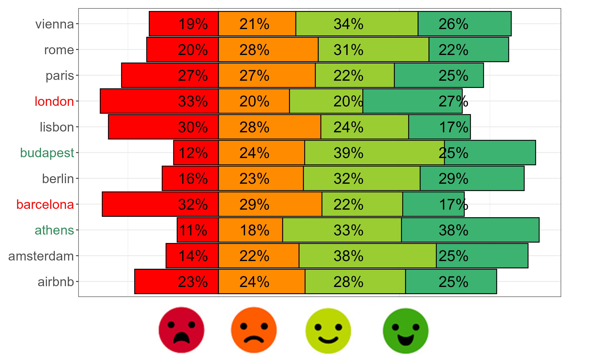
Highest price rates
Amsterdam, Paris, and London have the largest proportions of listings in the highest price quartile.
Lowest price rates
Athens and Budapest show the highest shares of low-price listings.
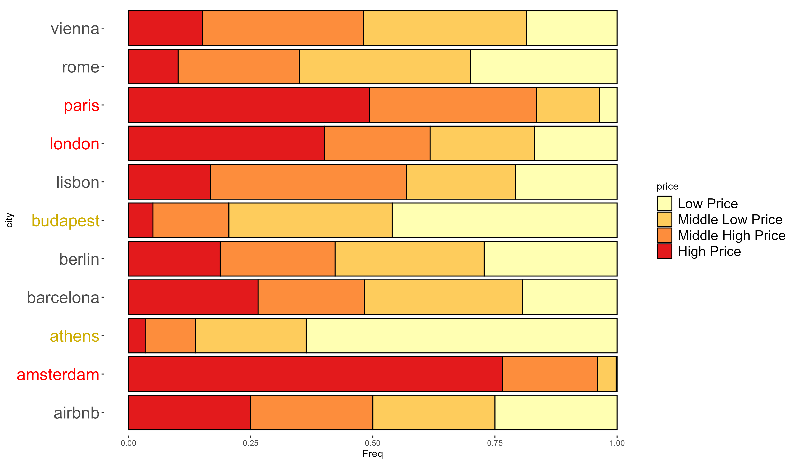
The patterns below summarize the residual interpretation: which price categories are associated with higher-than-expected high satisfaction, and which are associated with low satisfaction.
Very cheap listings skew toward low satisfaction. Expensive listings are mixed (associated with both high and low satisfaction), so “high price” does not reliably buy satisfaction. Middle price bands trend toward middle-high satisfaction.
Practical takeaway: Avoid extremes; choose mid-priced options and set realistic expectations.
High satisfaction is less common at the lowest prices, and more common from middle-low upward. Low satisfaction clusters at low price.
Practical takeaway: Don’t pick the cheapest; almost any step up improves reliability.
High satisfaction increases from middle-low upward; low prices are where dissatisfaction concentrates.
Practical takeaway: If you want consistent satisfaction, avoid the cheapest tier.
High satisfaction is less likely for the lowest prices and more likely for middle and high price tiers. Dissatisfaction clusters at low price.
Practical takeaway: Middle-high price bands are the safer bet for strong experiences.
Higher-priced listings are more strongly linked to high and middle-high satisfaction, while low price links to lower satisfaction levels.
Practical takeaway: If you can pay more, it meaningfully improves expected satisfaction.
These cities generally show a clearer “classic” pattern: high price aligns more with high satisfaction, low price aligns more with low satisfaction.
Practical takeaway: Cheap options are riskier; higher tiers are more reliable.
Patterns are less “monotonic”: extremes (high and low satisfaction) relate differently across middle-low vs high price categories.
Practical takeaway: Don’t assume linear value; read reviews carefully and avoid over-relying on price alone.
“Worth it” depends on the city. In Athens and Budapest, paying above the cheapest tier tends to deliver reliably high satisfaction. In London, high price is not a guarantee (it is associated with both very high and very low satisfaction), so the best strategy is to avoid extremes and pick mid-price bands. In Lisbon, paying more is more consistently linked to better satisfaction.
Residual heatmaps from Chi-square tests illustrating the association between price quartiles and guest satisfaction quartiles across European cities. Darker cells indicate stronger deviations from independence.
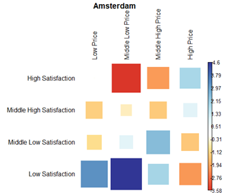
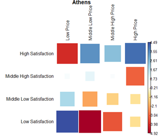
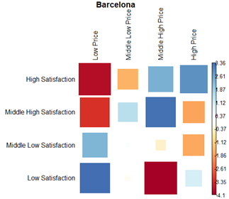
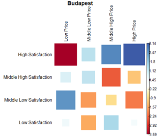
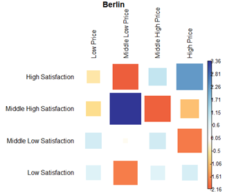
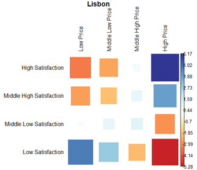
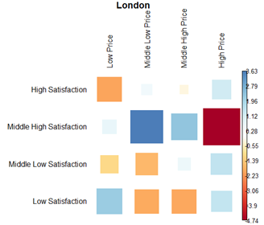
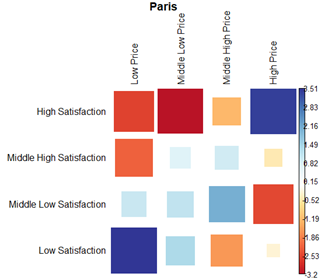
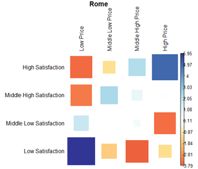
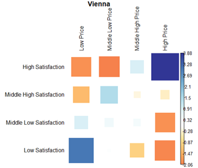
The infographic below summarizes (1) satisfaction distributions by city and (2) the heatmap-style relationship between price tiers and satisfaction tiers for selected low/high-satisfaction cities.
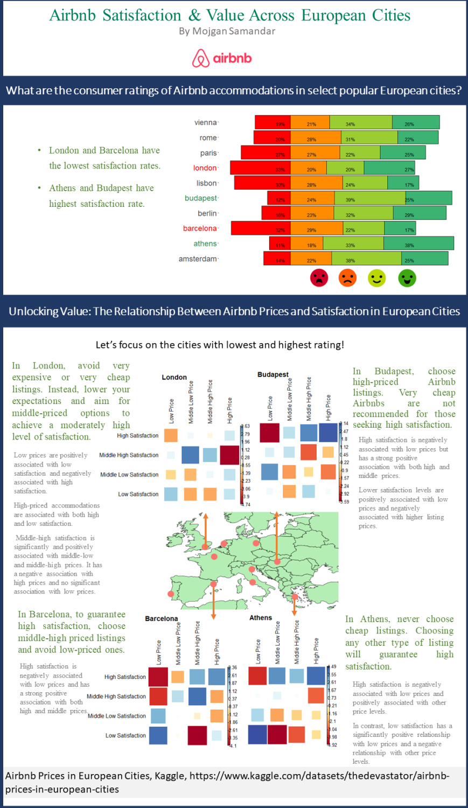
Dataset: Airbnb Prices in European Cities (Kaggle), originally collected via an automated scraping experiment described in Gyódi & Nawaro (2021).